レセプトの点検も、
入金の確認も、
朝にはAIが済ませています。
歯科医院の院長である私が、自分の医院で毎日動かしている仕組みを、先生の医院に合わせてお渡しします。いまお使いのレセコンや予約システムは、そのまま使えます。
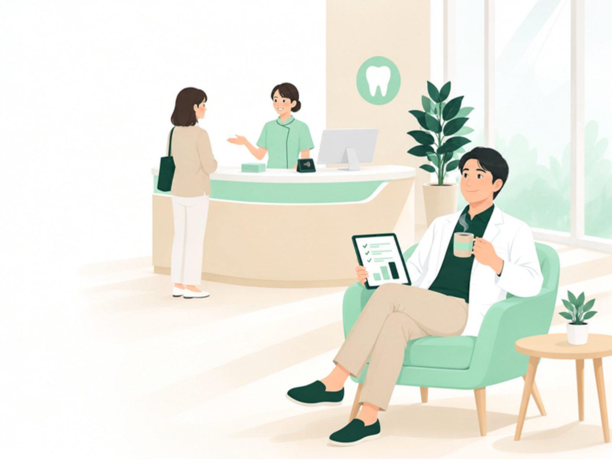
よくある困りごと
診療のあとに、
もうひとつの仕事が残っていませんか。
教えても、辞められたら一から。
仕事を覚えてもらっても、辞められると採用も教育も振り出しに戻ります。仕組みにしておけば、手順ごと医院に残ります。
外注は、返ってくるのが遅く、毎月かかる。
依頼したら、担当者の手が空くのを待ちます。作業の量に合わせて、費用も毎月かかり続けます。
院長が、締め作業で残る。
月末の集計や照合は、診療が終わってからの仕事です。院長とスタッフの時間が、毎月そこに消えていきます。
できること
当院で毎日動いている仕組みを、
そのままお渡しします。
どれも、私の医院でいま動いている仕組みです。数字は、医院の記録（予約システム・レセコン・口コミ・台帳）で数えたものです。カードを押すと、作り方を書いた記事が読めます。
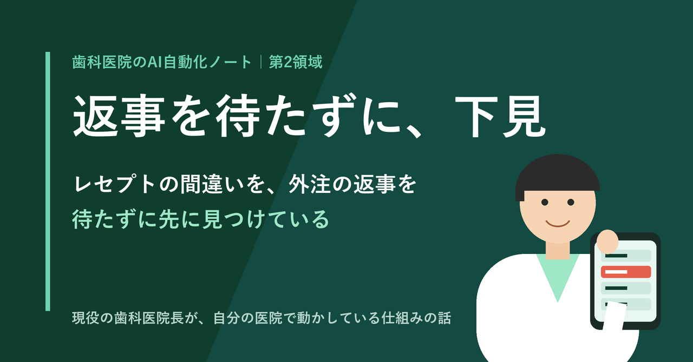
レセプトの間違いを、外注の返事を待たずに先に見つけている
1,087件（2026年6月分）。外注の指摘は142名、返事まで2日
記事を読む →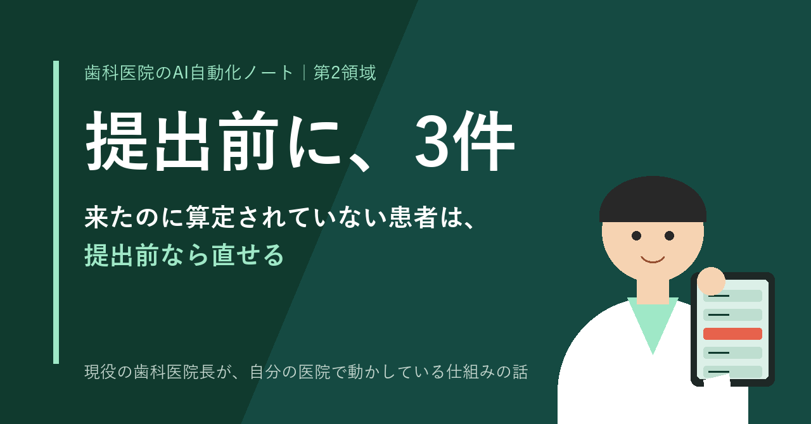
来たのに算定されていない患者は、提出前なら直せる
7月分は1,780組のうち、入力もれの候補が3組
記事を読む →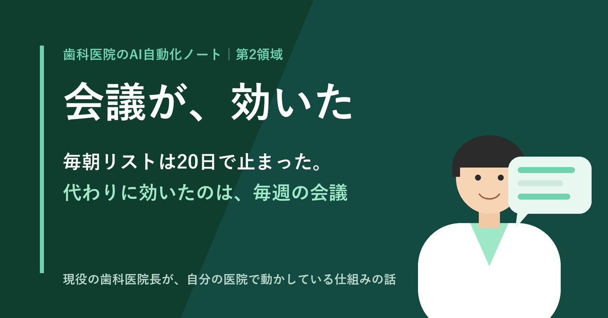
毎朝リストを出すより、週1回の会議で話すほうが効いた
「算定できたはず」の指摘が39件→31件（2026年7月→8月）
記事を読む →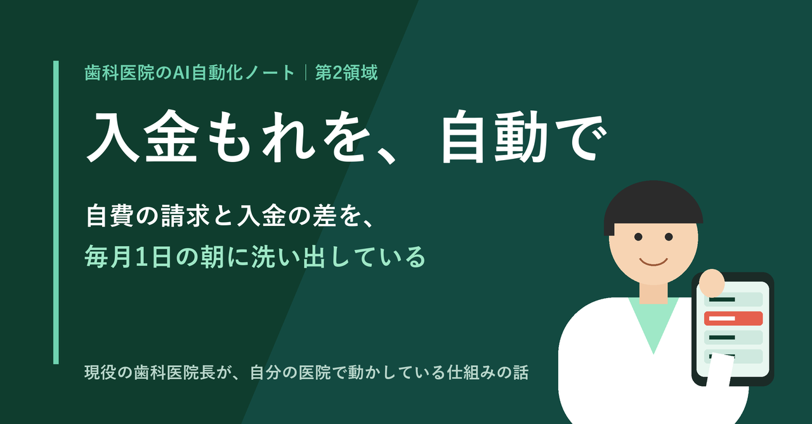
自費の入金もれを、毎月1日の朝に自動で洗い出している
請求と入金の差909,370円を見つけた（2026年7月分・1名）
記事を読む →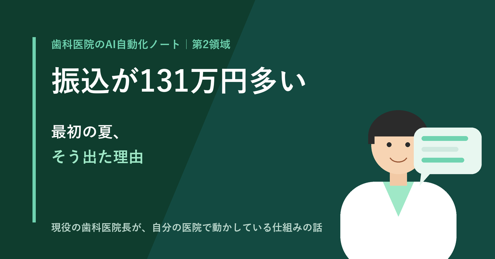
最初の夏、「振込が131万円多い」と出た理由
振込データと明細の差1,309,857円（7月）。足し引きすると1円まで合った
記事を読む →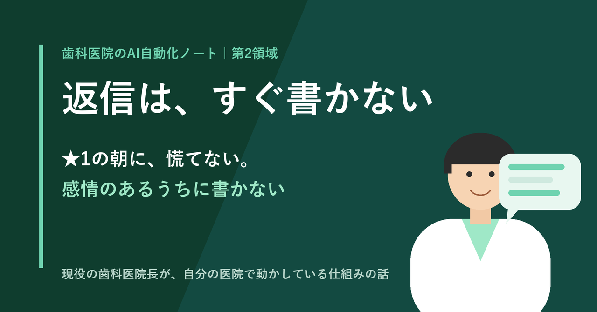
悪いクチコミへの返信は、感情のあるうちに書かない
224件・★4.5でも、未返信が5件（うち3件は★1。2026年9月3日）
記事を読む →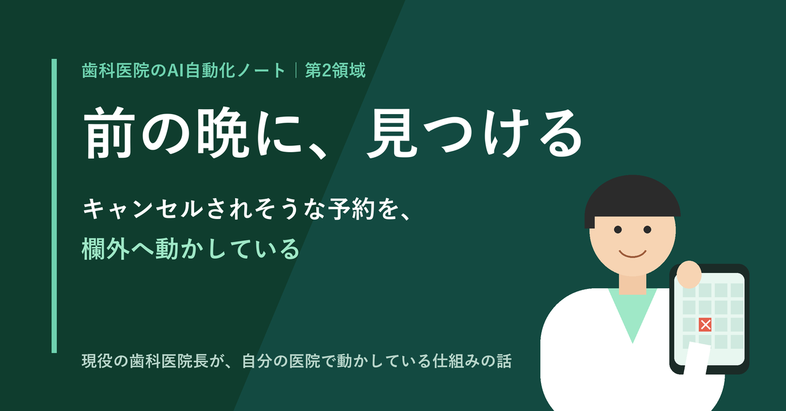
キャンセルされそうな予約を、前の晩に見つけて欄外へ動かしている
3つのルールで前の晩に印を付ける（過去1年のキャンセル率30%以上 など）
記事を読む →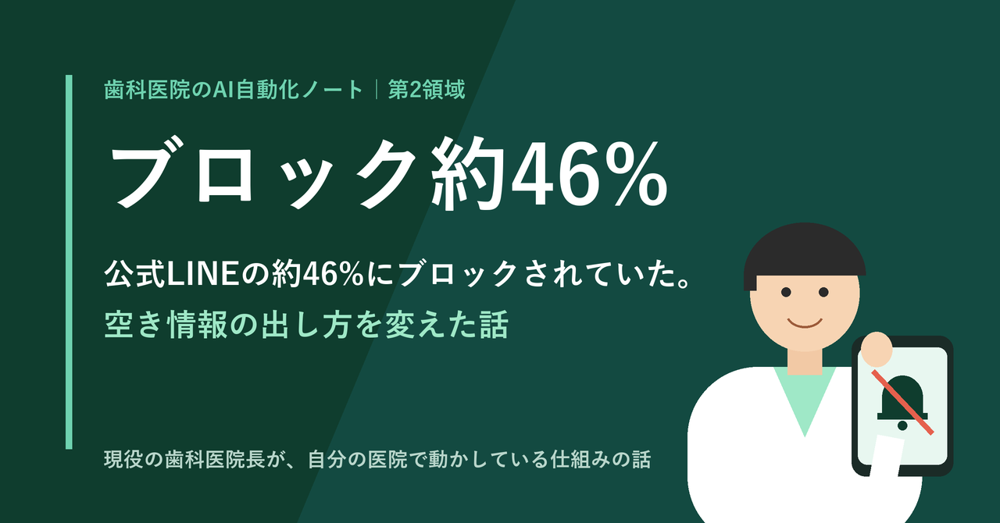
公式LINEの約46%にブロックされていた。空き情報の出し方を変えた話
公式LINEの友だちの約46%がブロック。いまは4か所へ自動で投稿
記事を読む →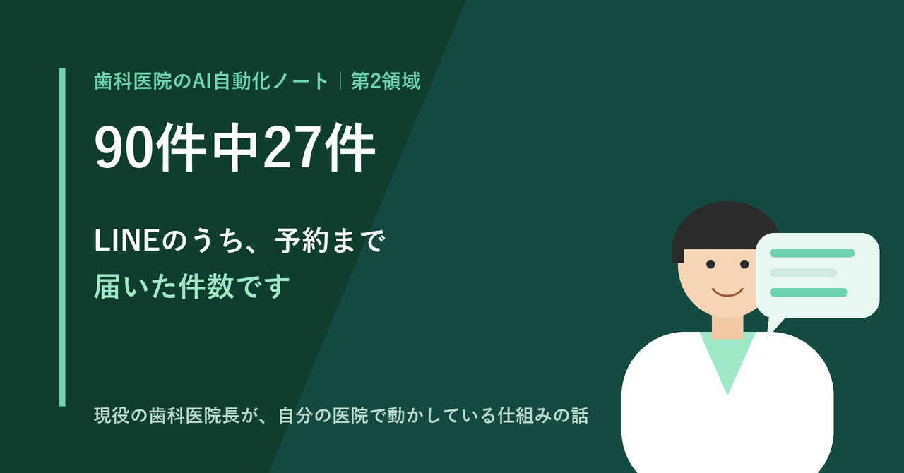
90件のLINEのうち、予約まで届いたのは27件だった
90件中27件が予約まで届いた（2026年10月16〜26日）
記事を読む →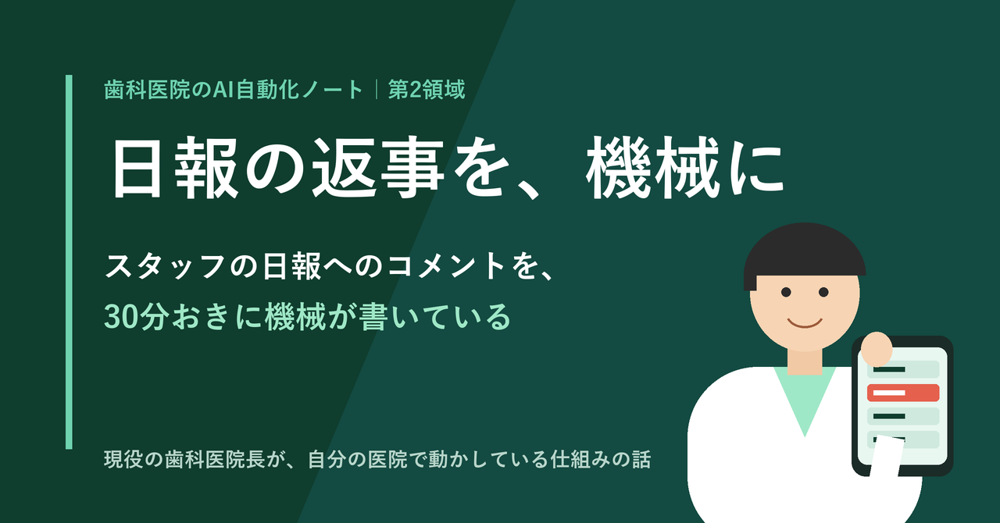
スタッフの日報へのコメントを、30分おきに機械が書いて承認まで済ませている
スタッフ20人あまりの日報に、30分おきにコメント
記事を読む →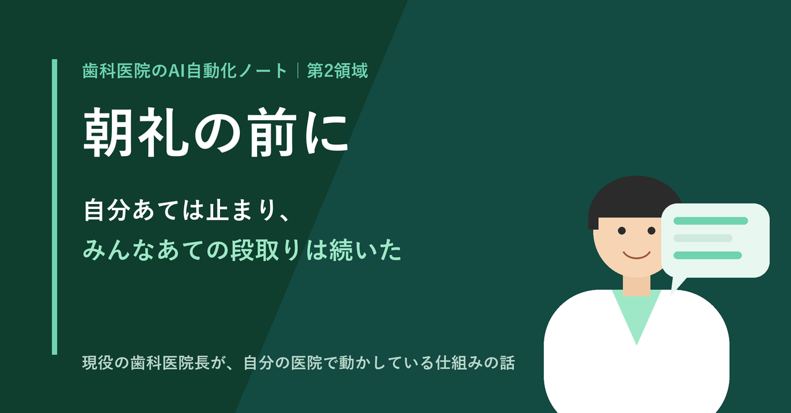
朝礼の前に、今日の段取りはもう配られている
期限切れのまま残っていた依頼71件（2026年9月5日に数えた数）
記事を読む →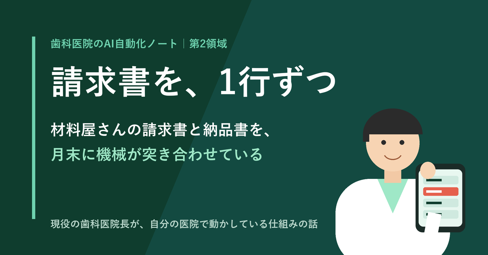
材料の請求書を、月末に機械が1行ずつ納品書と突き合わせている
8月分で、納品書の見つからない請求が1件・3,000円
記事を読む →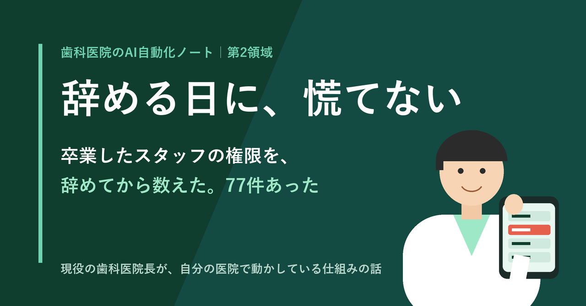
卒業したスタッフの権限を、辞めてから数えはじめた。77件あった
共有ファイル77件（うち48件は、辞めた後では取り戻せない）
記事を読む →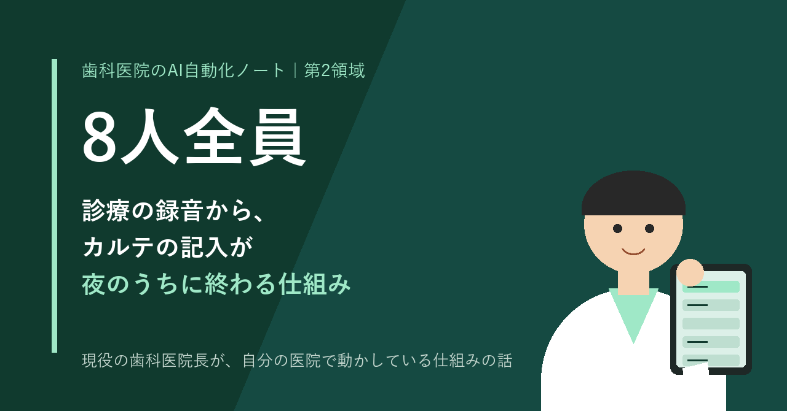
診療の録音から、カルテの記入が夜のうちに終わる仕組み
本番の初日、その日に診た8人全員のカルテに記入
記事を読む →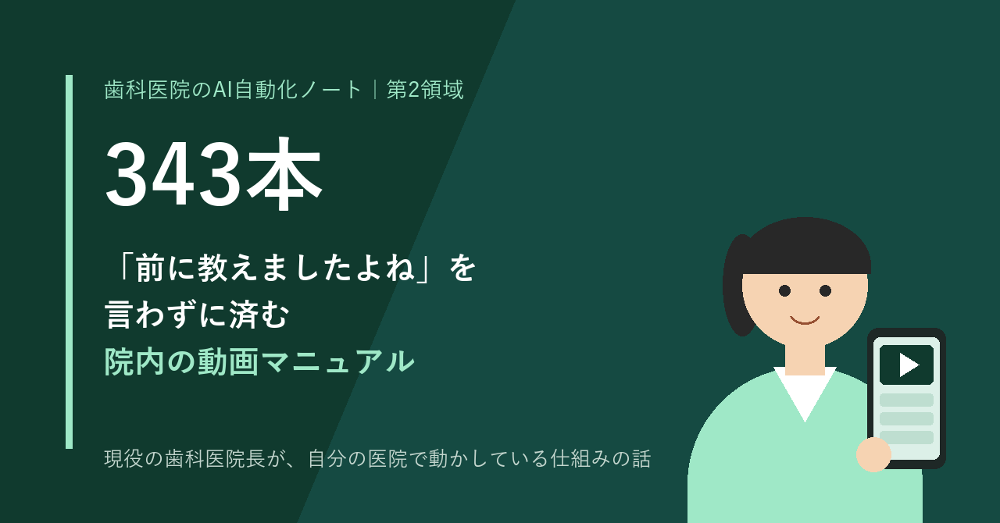
「前に教えましたよね」を言わずに済む院内マニュアル
院内の手順動画343本を、スマホで探せる一覧に
記事を読む →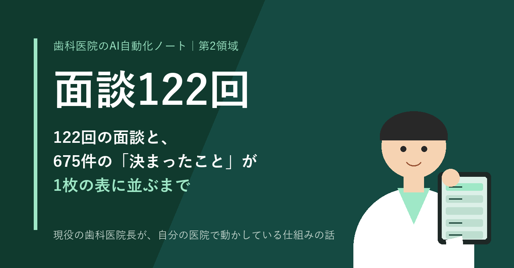
122回の面談と、675件の「決まったこと」が1枚の表に並ぶまで
面談122回、決まったこと675件を1枚の表に
記事を読む →個人名・患者さんの情報は載せていません。記事の続きは、noteの有料記事です。
比べると
事務長を雇う・事務代行に出す・仕組みにする。
3年で比べると、こうなります。
- 棒の長さは、3年間の費用を3,000万円を端として並べたものです。事務長の薄い部分は、幅（2,100〜3,000万円）を表しています。
- 第2領域の金額に、外部サービスの利用料は含みません（料金の欄を参照）。
ただし、電話に出ること、患者さんに声をかけることは、人にしかできません。AIが引き受けるのは、人がやる必要のない作業だけです。
進め方
いきなり任せきりには、しません。
相談する
医院の困りごとを伺います。合わないと思えば、無理に導入しません。
費用なし設定はおまかせ
お使いのシステムに合わせた設定と接続を、こちらで行います。
一緒に慣らす
最初のひと月ふた月は、これまでのやり方と並べて動かし、ズレを直します。
ここが肝心ですあとは自動
毎日AIが動きます。調整や直しは、月額サポートで続けます。
料金
はじめに一度と、あとは月額だけです。
処理する件数では、料金は上がりません。患者さんが増えても同じです。
医院に合わせた設定・接続・動作確認まで。自動化する仕事の数で変わります。
仕組み5本まで。動かし続ける・調整する・止まったら直す、を含みます。6本以上はご相談ください。
自動化できるかどうかを、正直にお伝えします。合わなければ、こちらからお断りすることもあります。
- 外部サービスの利用料は、医院のご負担です。必ず事前に金額をお伝えし、ご承諾をいただいてから進めます。
- いつでも停止できます。違約金はありません。当月末までにお申し出いただければ、翌月から止めます。
よくある質問
聞かれることに、先にお答えします。
うちのレセコンや予約システムでも使えますか？
多くの場合は使えます。画面を人が操作してできることは、たいてい自動化できます。お使いのシステム名を教えていただければ、「できる／できない」をお答えします。
ITに詳しいスタッフがいないのですが、大丈夫ですか？
大丈夫です。設定も接続も、こちらで行います。医院でしていただくのは、最初にIDとパスワードをお預かりすることと、出来上がったものを見ていただくことだけです。
患者さんの情報を外に出すことになりませんか？
なりません。仕組みはすべて医院のアカウントの中で動きます。名簿や一覧を、社外に置くことはありません。
医科のクリニックでも使えますか？
歯科医院向けに作っています。医科は個別にご相談ください。
どれくらいで動き始めますか？
内容が決まってから、おおむね数日〜数週間です。着手の前に、目安の日数をお伝えします。
途中でやめられますか？
やめられます。当月末までのお申し出で翌月から停止し、違約金もありません。作った仕組みと記録は、医院のアカウントに残ります。
事務長やスタッフが抱えている仕事も対象ですか？
むしろ、そこが中心です。集計・突合・転記・催促は、一人に集まりがちです。手順を仕組みに移せば、担当が代わっても同じように回ります。
歯科医院のDXと何が違うのですか？
新しいシステムに乗り換えなくてよい点です。いまのシステムはそのままに、そのあいだの手作業だけをAIが引き受けます。
先にお伝えしておくこと
- 止まることもあります。画面やパスワードが変わると止まりますが、その日のうちに分かる仕組みを付け、直すところまで月額に含みます。
- お返事は2営業日以内です。本業は歯科診療のため、日中すぐに電話がつながるわけではありません。
- AIが作るのは、下書きと候補までです。算定や患者さんへのお伝えは、医院が決めます。
- 最初のひと月ふた月は、これまでのやり方と並べて動かし、ズレを直していきます。
無料の自動化診断
5つの質問で、先生の医院に合う仕組みが分かります。
答えると、下にすぐ結果が出ます。送らなくても見られます。
診断の結果
Q1で仕事を選ぶと、ここが変わります。まずは代表的な3つです。
どれも、当院で動いている仕組みです。先生の医院のレセコンや予約システムで動かせるかは、ご相談のときにお答えします。